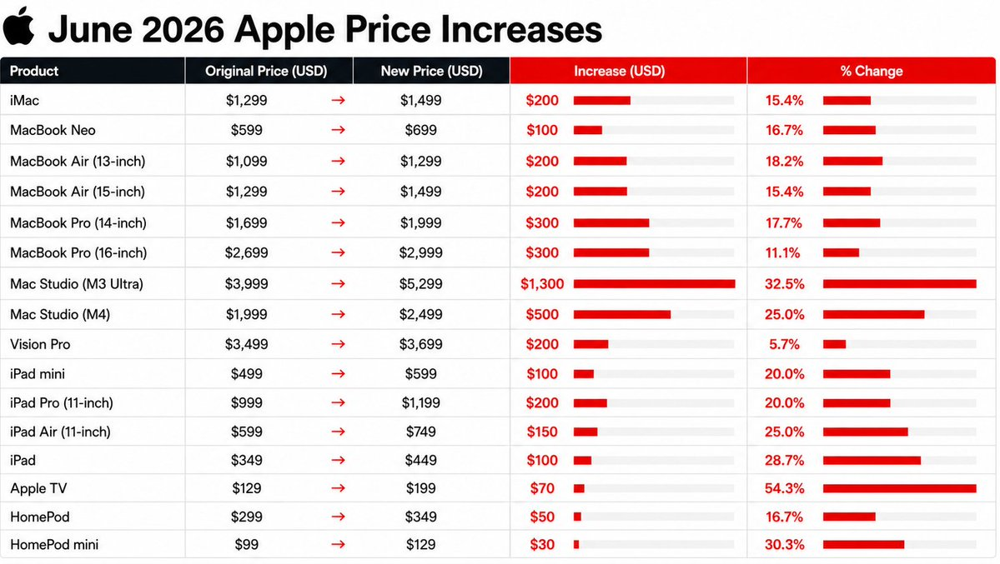

Beyond the Bill of Materials: Why Apple Can Charge More Than Dell and Lenovo
AI-driven memory costs may be pushing laptop prices higher, but Apple's real pricing advantage lies in its silicon strategy, ecosystem, and ability to capture value beyond the bill of materials.
Artificial intelligence is not just transforming data centers. It is also influencing the price of the laptop on your desk. As AI companies consume unprecedented volumes of DRAM and NAND memory to power large-scale AI infrastructure, memory prices have climbed across the semiconductor industry, increasing costs for consumer electronics manufacturers. While these rising component prices have contributed to Apple's recent price adjustments, they tell only part of the story.

Unlike Dell and Lenovo, which primarily rely on third-party processors from Intel and AMD, Apple designs its own M-series Apple Silicon and develops macOS in-house, giving it tighter control over hardware and software integration. This vertical integration enables industry-leading performance and battery efficiency while allowing Apple to differentiate its products far beyond the laptop's bill of materials. Combined with more than $30 billion in annual research and development investment, Apple's pricing reflects not only hardware costs but also years of engineering, software development, and ecosystem innovation.
The real difference, however, lies in how much value Apple is able to capture after the product is built. Premium Windows laptops often contain a larger proportion of third-party components, while Apple complements its hardware with proprietary silicon, long-term software support, seamless integration across its ecosystem, and consistently strong resale values. These factors help justify higher prices for many consumers, even as Apple's upgrade pricing for RAM and SSD storage continues to attract criticism for significantly exceeding the underlying component cost.
Ultimately, Apple is not competing solely on the cost of processors, displays, or memory chips. It is monetizing an integrated platform where hardware, software, services, and brand reinforce one another. Whether consumers believe that premium is justified remains a matter of personal value, but Apple's continued market success suggests that millions do.
Estimated Cost Breakdown (Premium Laptop)
| Cost Category | Apple MacBook | Dell / Lenovo Premium Laptop |
|---|---|---|
| Physical Components (CPU, Display, RAM, SSD, etc.) | 35-45% | 45-55% |
| Manufacturing and Logistics | 5-8% | 5-8% |
| Silicon and R&D Investment | 10-15% | 6-10% |
| Software and Ecosystem | 5-8% | 2-5% |
| Gross Margin (Before Operating Expenses) | 30-40% | 15-25% |
Figures are industry estimates derived from teardown analyses, public financial disclosures, and analyst research. Manufacturers do not disclose product-level bills of materials or margins, so values should be interpreted as representative ranges rather than exact figures.
References
- Apple Inc. Annual Report (Form 10-K), including research and development expenditure, gross margin, and business overview.
- Reuters: Apple raises prices of MacBooks and iPads as memory costs rise.
- Financial Times coverage of AI-driven DRAM and NAND memory demand and pricing trends.
- iFixit MacBook Air and MacBook Pro teardown series.
- Counterpoint Research and TechInsights teardown and bill-of-materials analyses.
Comments and reactions